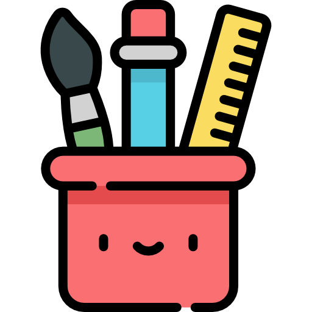

School Activities
Common phrases used in classroom activities
| Term | Translation | Audio |
|---|---|---|
| can I borrow that? | taamna atullavigu? | |
| can you help me? | ikayulavingngaa? | |
| do you have a pencil? | aglautiqaqpiit? | |
| he, she forgot it | piiguraa. | |
| I am done, finished | naatchir̂unga. | |
| I am sick | nangittunga. | |
| I colour at school | iliharvingmi aglaur̂aqtunga. | |
| I do not know | nalur̂unga. | |
| I don't know! | atchu! | |
| I forgot it | piigukkara. | |
| I learn at school | iliharvingmi ilihaqtunga. | |
| I like.. | nakuarigiga... | |
| I paint at school | iliharvingmi minguliqtunga. | |
| I play at school | iliharvingmi piur̂aaqtunga. | |
| I read at school | iliharvingmi taiguqtunga. | |
| I would like to have a pencil | aglautiqaruktunga. | |
| may I get a drink? | imillaviik? | |
| may I go to the washroom? | quiyaqturlaviik? | |
| my school is fun! | alianaitchuq iliharviga! | |
| my school is fun! | alianaitchuq iliharviga! | |
| place it here | maunga illiung | |
| place your backpack here | nanmagviin maunga illiung. | |
| place your book here | taiguan maunga illiung. | |
| place your pencil here | aglaun maunga illiung. | |
| place your puzzle here | ilihuraan maunga illiung. | |
| place your shoes here | kammakin maunga ililugik. | |
| place your toy here | piur̂aan maunga illiung. | |
| this is my pencil | una aglautiga. | |
| throw it in the garbage | hannikuvingmugung. | |
| work! (to one) | havagin! | |
| work! (to two) | havagittik! | |
| work! (to three or more) | havagitchi! |